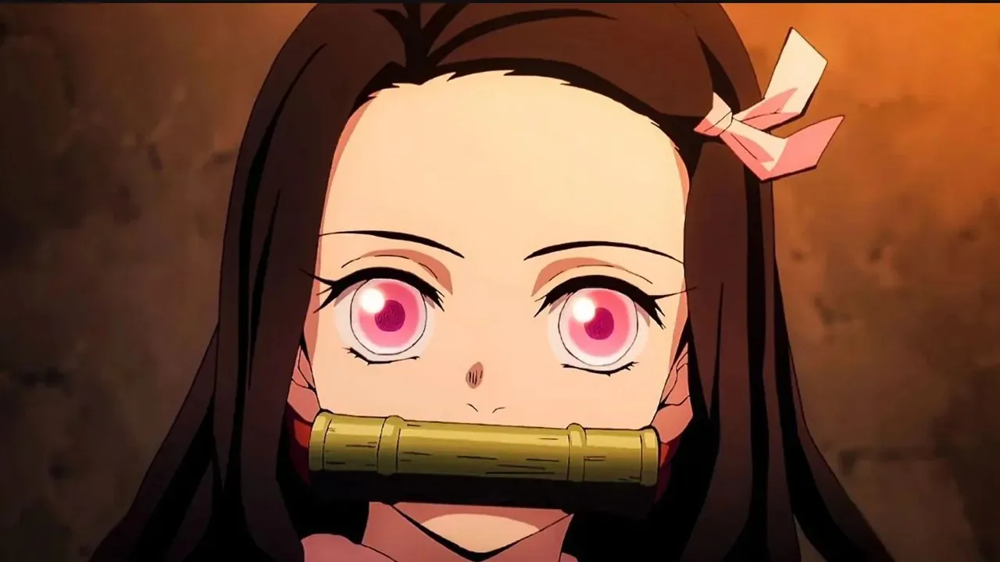

Nezuko
Nezuko es la hija de una vendedora de carbón y la hermana menor de Tanjirō que se convirtió en un demonio
El sufrimiento puede ser insoportable, pero también es lo que nos hace más fuertes.
EntrarNezuko es la hija de una vendedora de carbón y la hermana menor de Tanjirō que se convirtió en un demonio
fue criado por un jabalí, lo que le lleva a actuar en ocasiones de forma violenta e impetuosa
Zenitsu era un huérfano que no tenía orientación de ningún adulto. Debido a eso, Zenitsu se enamoró de una chica a la que le dio todo lo que poseía, sin embargo se fue con otro y dejó a Zenitsu con muchas deudas. Al final, Jigoro Kuwajima pagó sus deudas y decidió entrenarlo como espadachín.